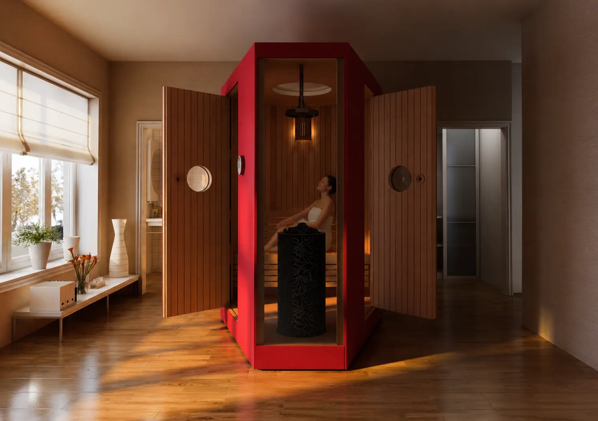
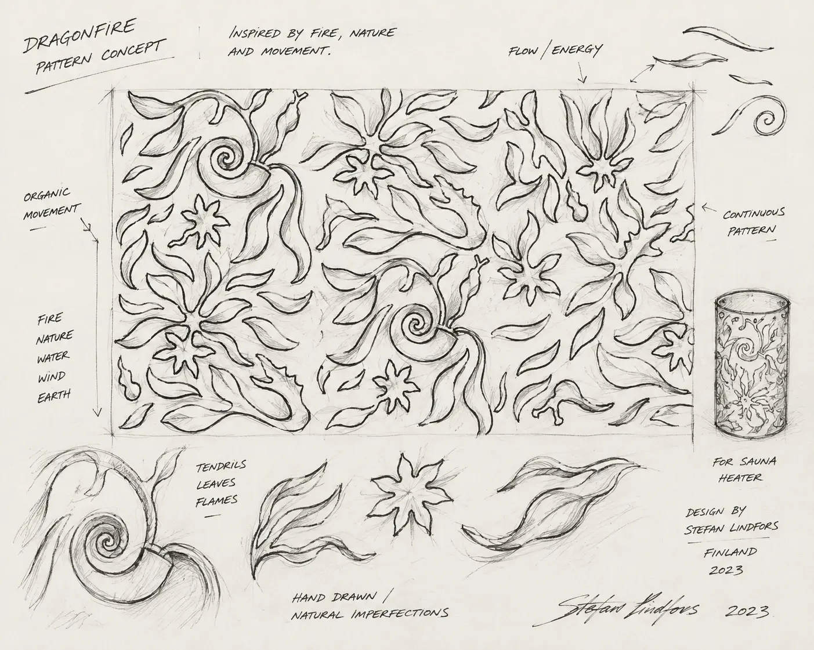
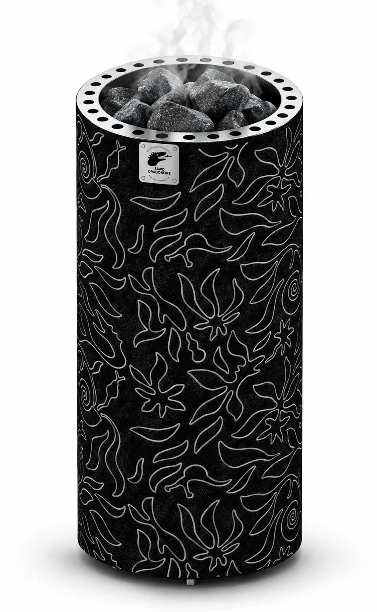
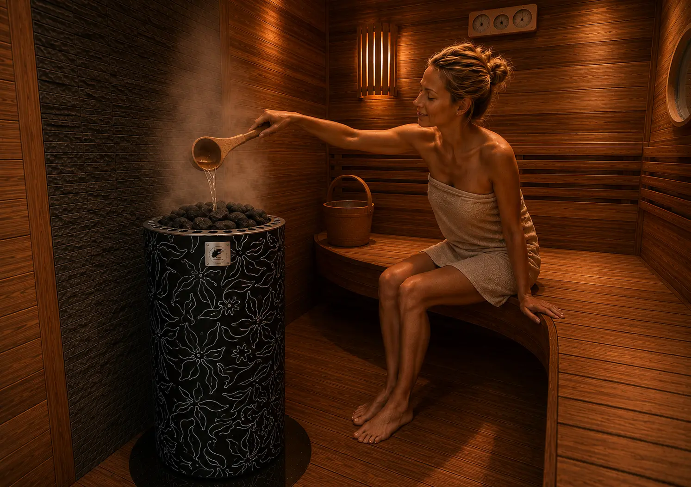
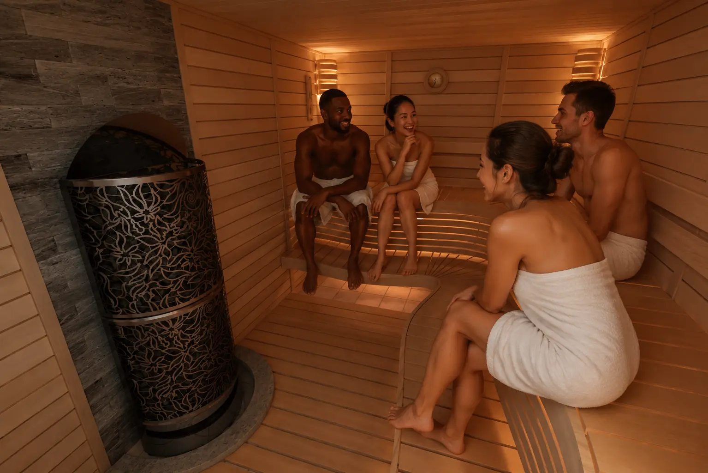
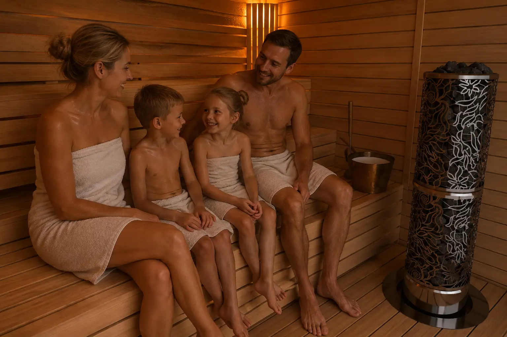
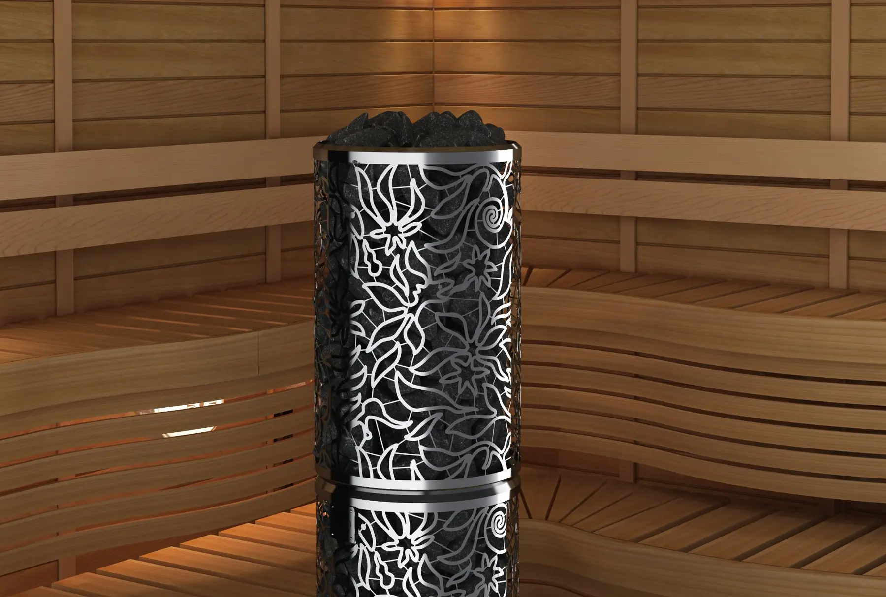
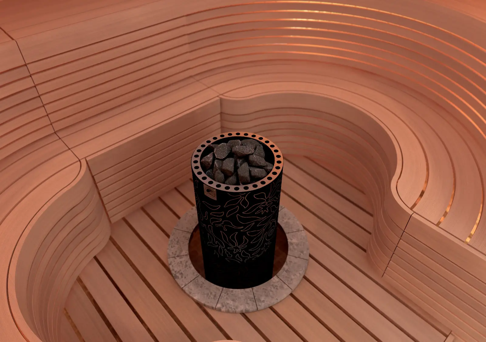
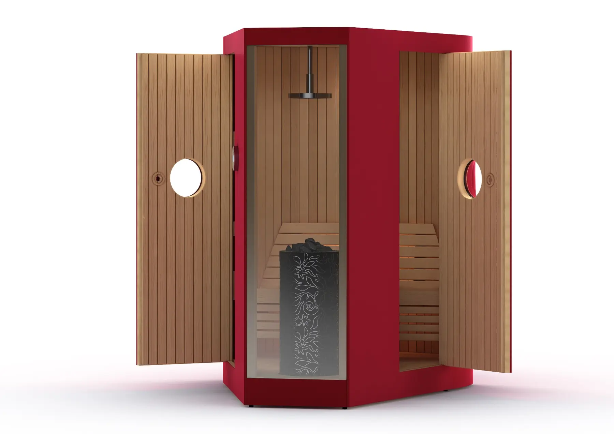

SAWO · PRODUCT DEVELOPMENT
Dragonfire
Series
Translating Stefan Lindfors' expressive jungle pattern into a producible surface and a coherent identity across SAWO's sculptural sauna-heater family.

MAKING THE PATTERN CONNECT
Developed with Finnish designer Stefan Lindfors, the Dragonfire series translates his expressive jungle pattern into a premium family of sauna heaters. My contribution was the painstaking transition from artwork to a producible surface: refining the pattern connections and repeatedly testing how the design aligned when rolled into a cylinder.


MY CONTRIBUTION
Pattern adaptation for production, repeated rolling and alignment tests, product development, 3D visualization and integration across the heater range. The same design language was carefully adapted into fiber and stainless-steel material treatments.
A SHARED DESIGN LANGUAGE
Two heater expressions, one product family.




PRODUCT OUTCOME
Fiber Jungle uses a cool-to-touch fiber exterior to soften the heater's presence, while Heaterking expresses the same motif in stainless steel. Both retain the functional top geometry, ventilation and stone capacity required for real sauna use.

